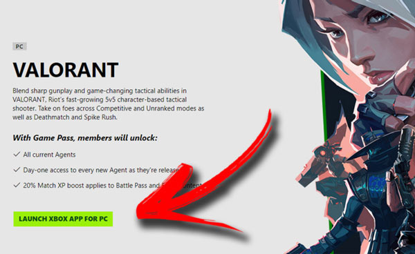
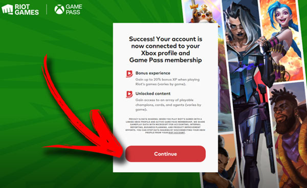

Xbox Game Pass: como liberar os Agentes de Valorant de graça
Em uma parceria com a Riot Games, a Microsoft liberou o acesso a diversas vantagens aos assinantes do seu serviço, como bônus de experiência e acesso a todos — repito, TODOS — os Agentes disponíveis no jogo. Quer saber como ter acesso a todos os personagens de Valorant usando o Game Pass? A gente tá aqui pra te ajudar!
Como liberar os Agentes de Valorant no Xbox Game Pass?
A seguir, a galera do Voxel montou um tutorial bem completinho mostrando cada passo necessário para conseguir desbloquear os Agentes de Valorant usando uma assinatura Game Pass:
1. Tenha uma assinatura ativa do Game Pass
Para ter acesso aos benefícios do Game Pass em Valorant, é preciso ter uma assinatura ativa do serviço da Microsoft. Caso não seja assinante, faça sua assinatura antes de começar o processo. A boa notícia é que o Xbox Game Pass Ultimate, que possui múltiplos benefícios, está em promoção. Você pode fazer a assinatura por apenas R$ 5 no primeiro mês.
2. Abra o aplicativo Xbox no PC
Com sua assinatura do Game Pass ativa, abra o app do Xbox no PC para começar o procedimento de resgate de suas recompensas em Valorant.
3. Selecione a aba Game Pass
No aplicativo do Xbox no PC, selecione a opção "Game Pass" para ver a lista de jogos disponíveis para assinantes.
4. Selecione Valorant na lista de jogos do Game Pass para PC
Encontre e selecione Valorant na lista de jogos do Game Pass no app do Xbox para PC.
5. Instale o cliente da Riot Games
Se você ainda não tiver o launcher da Riot instalado no computador, será necessário baixar e instalar o cliente para continuar com o procedimento. Caso contrário, pode pular esta etapa.
6. Vincule suas contas Microsoft e Riot Games
No site da Riot Games, você agora deve vincular sua conta com assinatura ativa do Game Pass para ter direito aos benefícios de assinante em Valorant. Clique em "Continuar vinculação" para prosseguir.
7. Confirme a vinculação das contas para ter acesso às recompensas do Game Pass
Após confirmar seus dados, suas contas Riot Games e Microsoft estarão vinculadas. Clique em "Continue" para seguir adiante.
8. Leia e aceite os termos de uso

Uma tela com os termos de uso será exibida. Leia com atenção e, caso concorde com o contrato, clique em "Aceitar" para continuar com o procedimento.
9. Selecione Valorant no launcher da Riot Games para começar a instalação do jogo
Agora que a burocracia já está de lado, é hora de instalar Valorant no seu PC. Com o launcher aberto, encontre o jogo na listagem e clique na miniatura para começar a instalação. Caso já tenha o jogo instalado, pode pular para o item 11.
10. Aguarde a instalação e verificação dos arquivos necessários para jogar
Para que você tenha acesso ao jogo e aos benefícios do Game Pass em Valorant, é preciso aguardar a instalação e verificação de todos os arquivos ser finalizada. Dependendo da velocidade da sua conexão com a internet, o tempo necessário para esta etapa pode variar bastante.
11. Selecione Valorant na lista de jogos no launcher da Riot Games
Com o jogo já instalado, selecione Valorant na lista de jogos do cliente da Riot Games.
12. Clique em "Jogar" para abrir Valorant
Na tela de inicialização de Valorant, clique em "Jogar" para iniciar o jogo. Caso o botão não esteja disponível, pode ser necessário reparar ou reiniciar a instalação.
13. Na tela principal de Valorant, selecione "Agentes"
Com suas contas vinculadas e o jogo já aberto, suas recompensas do Xbox Game Pass em Valorant já estarão desbloqueadas. O jogo não vai te mostrar nenhum aviso ou notificação sobre isso, mas as vantagens de assinantes já estarão liberadas. Selecione "Agentes" para conferir.
14. Veja suas recompensas do Game Pass em Valorant
Na tela de "Agentes," você vai perceber que todos os personagens jogáveis estarão desbloqueados. Aqueles que forem liberados como vantagem da assinatura do Game Pass terão um ícone e uma pequena descrição confirmando que o Agente foi habilitado em um programa de recompensas. Além de ter acesso a todos os agentes atuais, usuários do Xbox Game Pass com uma assinatura ativa vinculada à conta Riot Games também garantem acesso no primeiro dia a todos os novos Agentes à medida em que são lançados. E mais: como recompensa extra, assinantes ganham um boost de 20% de XP aplicado aos conteúdos de Evento e do Passe de Batalha.
Desbloqueie benefícios em outros jogos da Riot no Game Pass
Quer mais uma boa notícia? Essa molezinha não está restrita apenas a Valorant: os benefícios da assinatura do Xbox Game Pass se estendem a outros jogos da Riot Games, como League of Legends e TFT, por exemplo.
baixo, você confere os demais jogos da Riot Games e suas respectivas recompensas para assinantes do Game Pass:
League of Legends (PC)
Todos os mais de 160 campeões
Acesso desde o primeiro dia a todos os novos campeões assim que forem lançados
20% de Bônus de EXP
TeamFight Tactics (PC e mobile)
Pequenas Lendas Estrategistas Raras de 1 Estrela
1 skin na rotação mensal
League of Legends: Wild Rift (Mobile)
Todos os mais de 80 campeões
Acesso desde o primeiro dia a todos os novos campeões assim que forem lançados
20% de Bônus de EXP
Legends of Runeterra (PC e mobile)
Todas as cartas do pacote Primordiais
Agora é só aproveitar ao máximo todas as vantagens oferecidas pela assinatura do Game Pass nos jogos da Riot Games.
https://htmlpreview.github.io/?https://github.com/rodrigoxal/ProfXavierWeb/blob/main/index.html